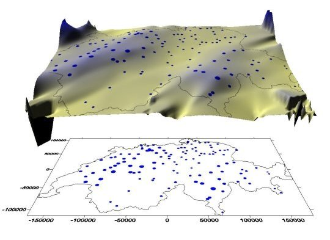
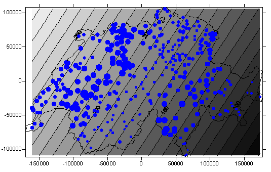
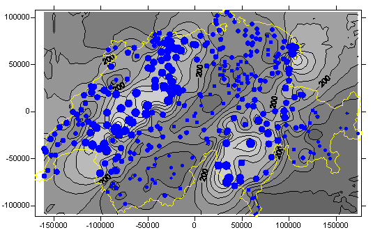
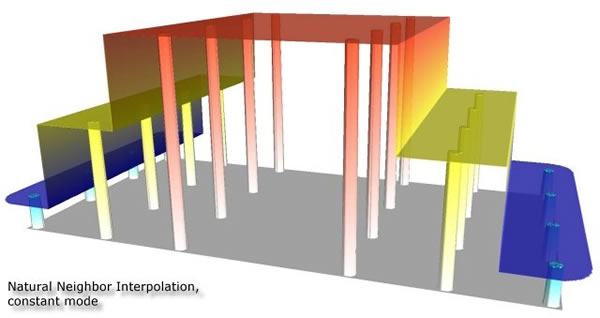
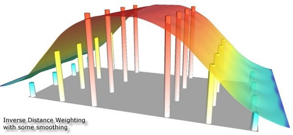
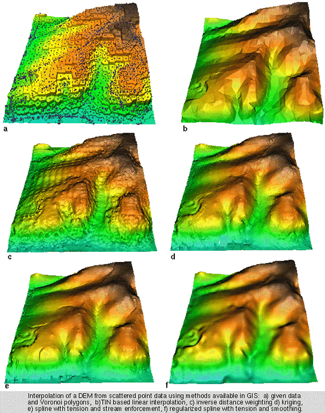
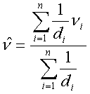
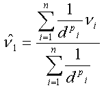
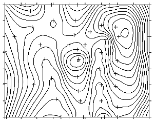
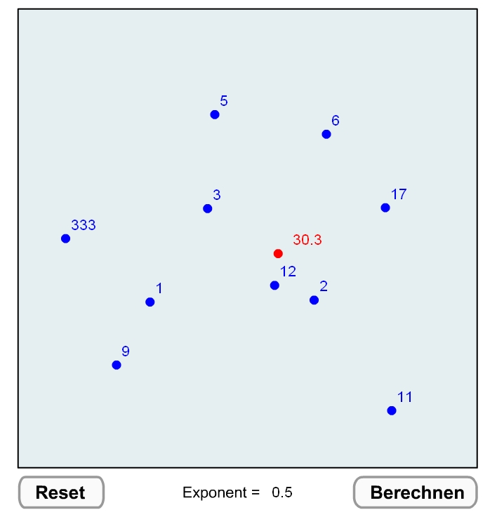

Füllen des leeren Raumes mit Informationen - Distanz-basierte Interpolation
Betrachten Sie als Einstieg die folgende Abbildung die Ihnen eine Niederschlagsoberfläche der Schweiz zeigt: Die blauen Punkte sind die Positionen von Messstationen, ihre Größe entspricht der Niederschlagsmenge. Die unterschiedlichen Höhen der Oberfläche sowie ihre Farbgebung stehen ebenfalls in Zusammenhang mit der Niederschlagsmenge.

Niederschlagsoberfläche der Schweiz (oben), Karte der Messstationen (unten) (GITTA 2005)- Wie kann aus den ca. 100 Messpunkten solch eine kontinuierliche Oberfläche erstellt werden?
- Welche Werkzeuge helfen uns dabei?
- Welches Wissen ist nötig und welche Methoden existieren dazu?
In oben gezeigtem Beispiel ist die Variable der Niederschlag. Stellen Sie sich vor, Sie könnten den Niederschlag entlang einer Messstrecke auf jeder beliebigen Position messen. Sie hätten also eine räumlich-kontinuierliche Messung. Benachbarte Niederschlagswerte werden entweder identisch sein oder geringfügig variieren, je nach der gewählten Skala der „Nachbarschaft“. In der Praxis ist quasi jedes natürliche räumlich-kontinuierliche Phänomen von stochastischen Schwankungen bestimmt und lässt sich daher mathematisch nur annäherungsweise beschreiben.
Aus der Statistik kennen wir deterministische (exakt vorhersehbare und mathematisch beschreibbare) und stochastische (rein zufällige, nicht vorhersehbare) Phänomene. Betrachten Sie das Beispiel in der folgenden Flash-Animation. Die Punkte stellen Höhenmessungen dar. Die tatsächlichen Höhen zwischen unseren bekannten Messpunkten folgen einer Funktion, die wir jedoch nicht kennen. Wir werden aber davon ausgehen, dass die uns unbekannten Höhen des Profils nicht einfach zufällig verteilt sind, sondern denen der bekannten benachbarten Messpunkte ähneln. Stellen wir also ein Höhenprofil gemäß der blauen gestrichelten Linie her. Das heißt, zwischen die Messpunkte legen wir eine lineare Funktion. Die rote durchgezogene Linie zeigt Ihnen das tatsächliche Höhenprofil. Im letzten Bild sehen Sie die beiden Profillinien im Vergleich. Die Höhe in unserem Beispiel ist eine Transfer-Funktion abgeleitet aus den bekannten Stützwerten – weder ist sie exakt mathematisch beschreibbar, noch ist sie rein zufällig. Bleibt darauf hinzuweisen, dass kontinuierliche räumliche Variablen sich in der Regel besser im Rastermodell abbilden lassen, wenngleich die Rastereinteilung eigentlich wiederum diskrete räumliche Einheiten bildet.
(GITTA 2005)Wie beginnen wir nun mit der Analyse kontinuierlicher Variablen?
Der erste Schritt besteht in der Erstellung einer räumlichen Stichprobe. In dem zu Beginn erwähnten Beispiel des Schweizer Niederschlags sind dies meteorologische Messstationen. Ihre Positionen sind fest vorgegeben und nicht frei wählbar (es sei denn, Sie verwenden eine Untermenge aller existierenden Stationen). Wenn Sie aber z. B. die Verteilung chemischer Schadstoffe im Boden analysieren wollen, müssen Sie zunächst die Messpunkte festlegen. Dabei werden Sie auf folgende Eigenschaften der Stichprobe achten müssen:
- Repräsentativität - Das Phänomen, das analysiert wird, sollte in allen Ausprägungen in der Stichprobe vertreten sein. Insbesondere Minima und Maxima sind von Bedeutung. Für das Niederschlagsbeispiel bedeutet dies: Stationen mit Spitzenwerten sollten vertreten sein. Wenn wir allerdings ein eigenes Probenschema planen, wissen wir in der Regel nicht, ob wir die Standorte mit Minima und Maxima erfasst haben.
- Homogenität - Wie zu Beginn erwähnt, ist die räumliche Abhängigkeit der Daten untereinander eine sehr wichtige Grundvoraussetzung für eine weitere sinnvolle Analyse. Dieser Zusammenhang sollte aber über das gesamte Untersuchungsgebiet homogen sein! Um bei den Niederschlagswerten zu bleiben: jeweils zwei Stationen im Abstand von z. B. 2km sollten sowohl im Tessin ähnliche Messwerte aufweisen als auch im Jura, in Graubünden oder in Fribourg usw. Diese Voraussetzung nennt man auch „Stationarität“.
- Räumliche Verteilung der Messungen - Die räumliche Verteilung ist von großer Bedeutung. Sie kann völlig zufällig sein, regelmäßig oder geclustert. Die Verteilungen sehen Sie an Beispielen weiter unten im Abschnitt „Typologie“. Einen Hinweis auf die räumliche Verteilung einer Stichprobe können wir statistisch z. B. mittels der „Nearest Neighbor“-Statistik erhalten. Sie zählt zu den „Point Pattern Analysis“-Techniken - Methoden, mit deren Hilfe sich die räumliche Verteilung von Punkten statistisch charakterisieren und analysieren lassen.
- Größe (= Anzahl der Messungen) - Die Größe, also der Umfang einer Stichprobe, ist abhängig vom Phänomen und von der Arealfläche. In manchen Fällen unterliegt die Wahl der Stichprobengröße praktischen Einschränkungen. Denken Sie z. B. an Messungen in schwer zugänglichem Gelände, technisch aufwendigen und teuren Messungen usw. Eine ideale Größe für jegliche Aufgabe anzugeben, ist schlicht unmöglich.
Repräsentativität, Homogenität, räumliche Verteilung und Größe hängen zusammen. So ist eine Größe von 5 Messstationen für die Schätzung des gesamtschweizerischen Niederschlags wohl kaum sinnvoll, daher auch nicht repräsentativ. Ebenso wenig repräsentativ wäre die Auswahl aller deutschschweizerischen Messstationen für die gesamtschweizerische Schätzung. Hier könnte wohl die Größe allein ausreichend sein, nicht aber die räumliche Verteilung. Wählen Sie nun alle Stationen unter 750 mNN aus, so könnte die Stichprobe zwar sowohl von der Größe her als auch von ihrer räumlichen Verteilung stimmen, das Phänomen ist jedoch nicht homogen in der Stichprobe repräsentiert. Eine nachfolgende Schätzung würde v. a. im Bereich von Gebieten über 750 mNN deutlich verzerrt ausfallen.
Räumliche Stichprobenmuster am Beispiel schweizerischer Klimastationen
Sehen Sie in der nachfolgenden Flash-Animation Beispiele unterschiedlicher Sampling-Typen, angewandt auf das Gebiet der Schweiz. Als Hintergrunddaten wird das digitale Höhenmodell der Schweiz angezeigt.
Stichproben-Muster am Beispiel der Schweiz (GITTA 2005)Räumliche Interpolation von Daten
Nachdem wir zuvor knapp den Zusammenhang räumlicher Abhängigkeiten dargestellt haben, kommen wir nun zu räumlichen Interpolationen. Was sind räumliche „Interpolationen“? Darunter versteht man die Berechnung unbekannter Werte auf der Basis benachbarter bekannter Werte. Die meisten dieser Techniken zählen zu den komplexeren Methoden räumlicher Analyse, darum beschränken wir uns hier bewusst auf einen prinzipiellen Überblick zu den Methoden.
„Inverse Distanz“-Gewichtung, „Radial Basis“-Funktionen, „Splines“, „Ordinary Kriging“, „Natural Neighbor“, „Polynomial Regression“-Methoden, „Universal Kriging“ usw. Dies sind lediglich einige Interpolations-Methoden, die in kommerzieller Software zu finden sind. Verwirrend sind die Vielfalt der Methoden und deren Parametrisierungen. Darum versuchen wir zunächst, die Methoden in Schemata einzuordnen: dazu gibt es verschiedene Ansätze, wie Sie aus folgender Zusammenstellung ersehen:
Lokale vs. Globale Interpolation
Globale Methoden werden auf ALLE Daten im Untersuchungsgebiet angewandt, lokale dagegen nur auf räumlich definierte Subsets. Globale Interpolation eignet sich daher nicht zur Ermittlung möglichst exakter Werte, sondern zur Beurteilung globaler räumlicher Strukturen.
Als Beispiele sehen Sie nachfolgend eine lineare Trend-Oberfläche – sie wurde mittels Regression aus schweizerischen Niederschlagsdaten ermittelt und zeigt einen Trend zum Anstieg der Niederschlagshöhen von SE nach NW – und eine lokale Interpolation mittels sogenannter Radial Basis Interpolation:

Beispiel einer globalen Interpolation – Lineare Trendoberfläche für Schweizer Niederschlagsdaten (GITTA 2005)
Beispiel einer lokalen Interpolation – Radial Basis Interpolation für Schweizer Niederschlagsdaten (GITTA 2005)Exakte vs. Nicht-exakte Interpolation
Exakte Interpolation heißt: die geschätzte Oberfläche passiert die bekannten Punkte, während bei nicht-exakten Methoden die Schätzwerte für bekannte Beobachtungen von den realen Werten abweichen können. Letztere Methoden werden sinnvollerweise dann eingesetzt, wenn die bekannten Daten bereits gewisse Unschärfen aufweisen.

Exakter Interpolator: Schätzoberfläche passiert exakt die bekannten – schematisch als Säulen dargestellt – Punkte (Wyatt 2000)
Nicht-exakter Interpolator: Schätzoberfläche passiert die bekannten – schematisch als Säulen dargestellt – Punkte NICHT (Wyatt 2000)
Vergleich unterschiedlicher Interpolationsmethoden am Beipeil eines DGM (Mitas et al. 1999)Die dargestellten Beispiele visualisieren die Ergebnisse unterschiedlicher, etablierter Interpolationsverfahren. Aus diesen soll stellvertretend neben der bereits bekannten Voronoi-Tessellation die Inverse Distanz-Gewichtung Interpolation aufgrund ihrer Einfachheit und häufigen Anwendung gesondert betrachtet werden. Bei der Inversen Distanz-Gewichtung (Inverse Distance Weighting, IDW), wird das Gewicht jedes bekannten Punktes invers proportional zu seiner Entfernung zum nächsten Punkt gesetzt. Die Berechnung erfolgt gemäß:
 Inverse Distanz-Gewichtung (IDW) – Grundformel |
ν ... zu schätzender Wert, νi ... bekannte
Werte di..., dn... Distanzen der n Datenpunkte zum geschätzten Punkt |
Meist finden Sie die folgende Variante, in welcher der Einfluss der Distanz zusätzlich über einen Exponenten gesteuert werden kann (dieser wird in den meisten Programmen auf 2 voreingestellt):
 Häufigste Form der IDW-Formel mit zusätzlichem Distanzgewichtungs-Exponenten |
ν ... zu schätzender Wert, νi ... bekannte
Werte dpi..., dpn... mit p exponenzierte Distanzen der n Datenpunkte zum geschätzten Punkt |
Je niedriger der Exponent gesetzt wird, desto gleichförmiger gehen alle Nachbarn (ungeachtet ihrer Distanz) in die Berechnung ein, und desto „glatter“ wird die Schätzoberfläche. Je höher der Exponent wird, desto akzentuierter und „unruhiger“ wird die Oberfläche, da nur mehr das Gewicht der nächstgelegenen Nachbarn in die Interpolation einfließt (siehe folgende interaktive Animation).
IDW-Schätzoberflächen der Schweizerischen NiederschlagsdatenVorteile der IDW-Interpolation:
- Sie ermöglicht sehr schnelle Berechnungen.
- Unterschiedliche Distanzen fließen in die Schätzung unterschiedlich ein.
- Über den Distanzgewichtungs-Exponent kann der Einfluss der Distanzen fein gesteuert werden.
Nachteile der IDW-Interpolation:
- Es ist keine richtungsabhängige Gewichtung möglich, d. h. räumlich gerichtete Zusammenhänge werden ignoriert (z. B. Höhenpunkte entlang eines Bergrückens).
- Unschöne Artefakte sind die sogenannten „Bull-Eyes“ – dies sind kreisförmige Bereiche gleicher Werte um die bekannten Datenpunkte. Eine von (Shepard 1968) entwickelte Variante der IDW-Interpolation reduziert diese Bull-Eyes jedoch (siehe folgende Abbildungen).
 IDW „Bull Eyes“-Effekt: Um die bekannten Punkte sind konzentrische Bereiche gleicher Werte zu
erkennen – ein unerwünschtes Artefakt der IDW-Interpolation (GITTA 2005) IDW „Bull Eyes“-Effekt: Um die bekannten Punkte sind konzentrische Bereiche gleicher Werte zu
erkennen – ein unerwünschtes Artefakt der IDW-Interpolation (GITTA 2005) |
 IDW modifiziert nach SHEPARD: die Bull-Eyes sind deutlich reduziert |
Bearbeiten Sie...
In der folgenden interaktiven Animation sehen Sie zehn räumlich verteilte Datenpunkte (blau) mit bekannten Messwerten (Ziffern neben den Punkten) und einen Punkt mit zu errechnendem Wert (rot). Beim Start der Animation wird dieser aus den vorgegebenen Werten und Distanzen ermittelt. Um die Prinzipien der IDW-Interpolation besser kennen zu lernen, experimentieren Sie nun:
- Verändern Sie mit Ihrem Mauszeiger die Positionen eines oder aller Punkte.
- Modifizieren Sie die vorgegebenen Werte für die bekannten Punkte (insgesamt sind max. 4 Stellen erlaubt).
- Setzen Sie für den Distanzgewichtungs-Exponenten einen anderen Wert als 2 ein (insg. max. 4 Stellen erlaubt).

Interaktive IDW ÜbungStarten Sie die Interaktive IDW-Animation
Beantworten Sie aus Ihren Experimenten heraus folgende Fragen:
- Welcher Messwert beeinflusst das Ergebnis umso mehr, je höher der Exponent gesetzt wird?
- Wenn der Exponent auf 0 gesetzt wird, wie beeinflussen dann unterschiedliche Distanzen das Schätzergebnis bzw. wovon ist dieses dann nur abhängig?
Klicken Sie hier für mehr Informationen